The appointment diary hairdressers deserve.
Chair is a salon diary for Android that understands how hair is really done. Processing time stays free for other clients, holidays and bank holidays are blanked out in seconds, and every client's formulas, skin tests and photos are a tap away.
It is free, with no subscription, no per-stylist charge, no fees on new clients and no adverts. Everything stays on your phone, encrypted, and the app cannot go online.
Free, with nothing to unlock. Android 8 or later. Version 1.0, 2.4 MB. Compare · Release notes
Chrome may say the file might be harmful. It shows this for app files that do not come from Google Play. Choose Download anyway, open the file, and allow your browser to install apps if Android asks.
How it works
Set up takes about two minutes: your salon, your hours, your services and your stylists. A ready-made menu of cuts, colours and treatments gets you started, with times and prices you can change.
Book
Tap +, pick the client and the services. Chair works out the length, the price and the processing time, and warns you about clashes and skin tests.
Blank out
In Time off, block a holiday, a training day or every lunch. Chair shows any bookings in the way so nobody is let down.
Get paid
Tap Take payment when the client leaves, rebook them in one tap, and see the takings add up in Takings.
What it looks like
Calm, clear and easy to read between clients, in the same warm colours and type as Calmer. Each stylist has their own colour.
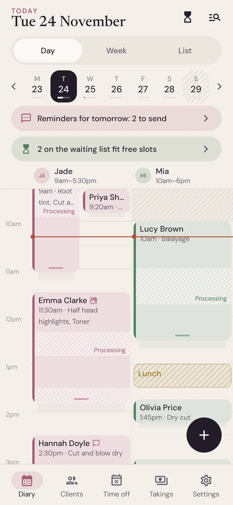
DiaryEach stylist side by side, with processing time left free and lunch blanked out. 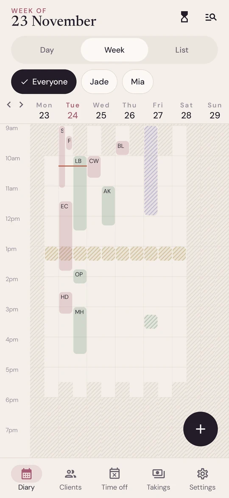
WeekThe whole week at a glance, time off and bank holidays shaded. 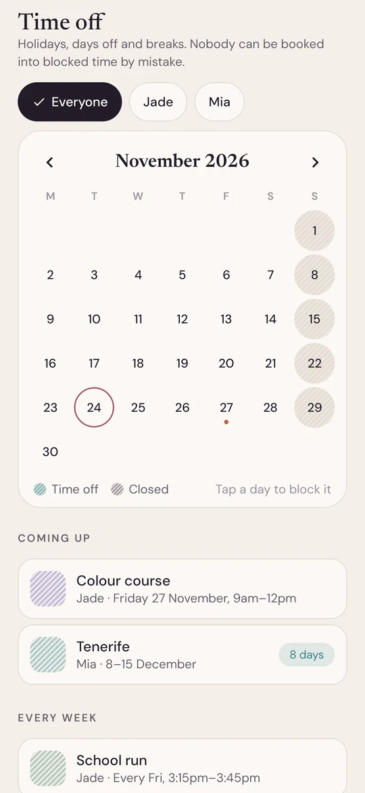
Time offHolidays, training and repeating blocks, for one stylist or everyone. 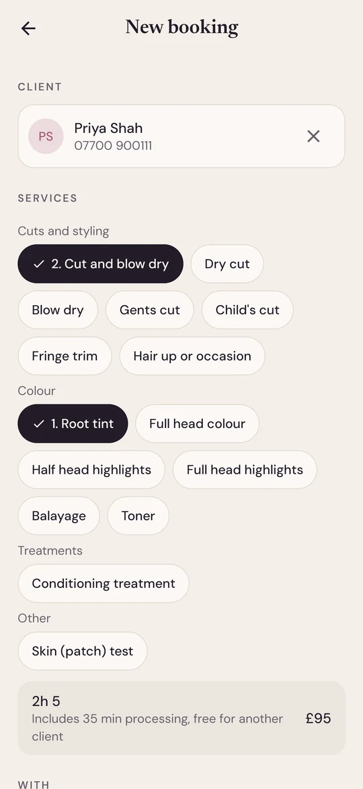
New bookingPick the services and the length, price and processing time follow. 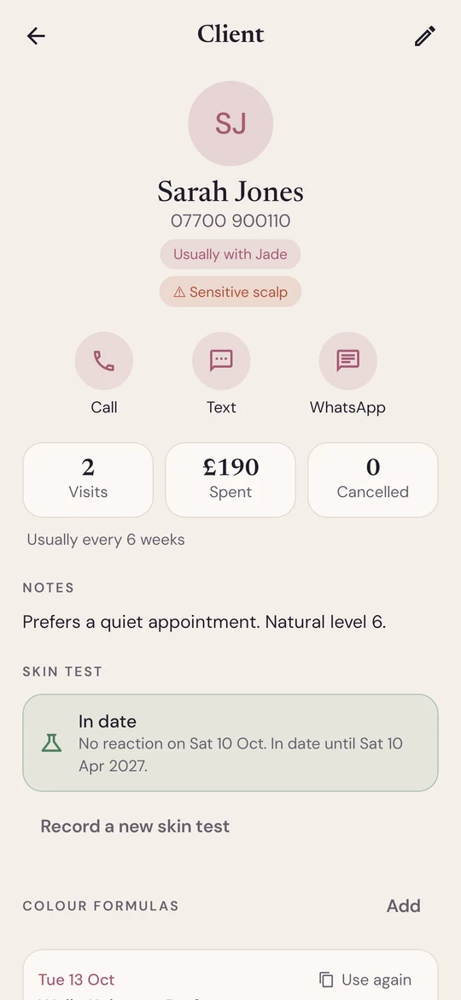
ClientVisits, spend, notes, skin tests and colour formulas in one place. 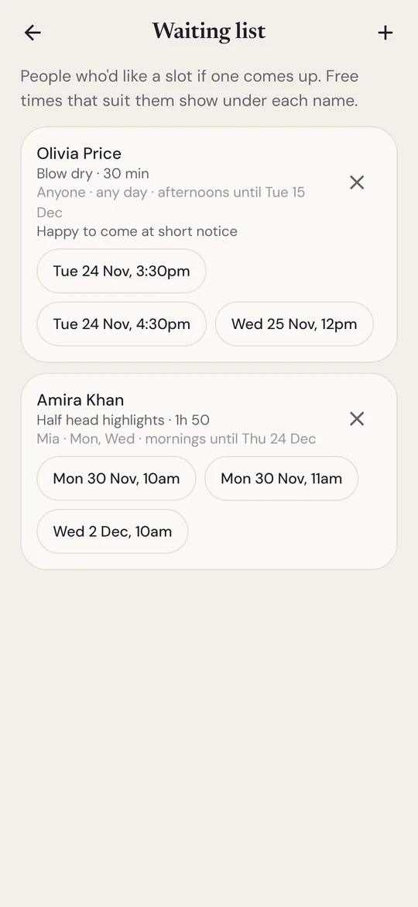
Waiting listWho wants an earlier slot, and the gaps that suit them. 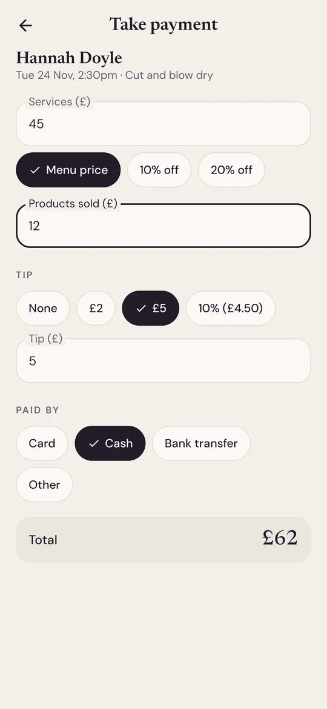
Take paymentCard, cash or transfer, with tips and products. 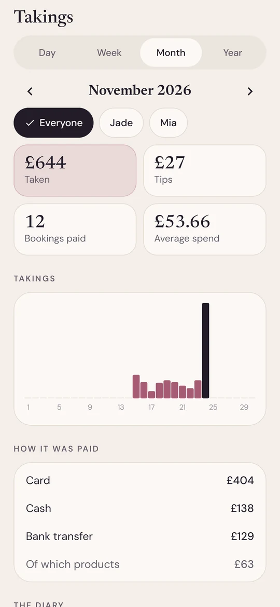
TakingsA month of takings, how people paid and how full the diary was. 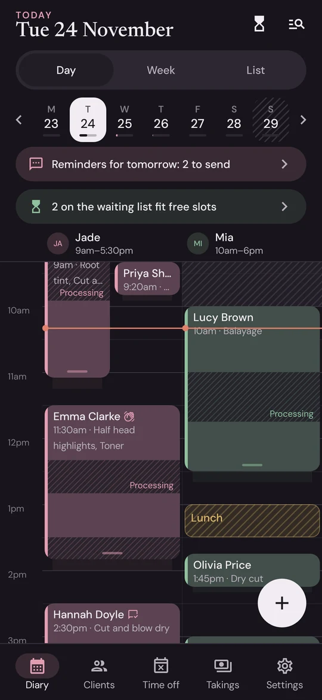
Dark themeThe same diary in a softer, darker look for late finishes.
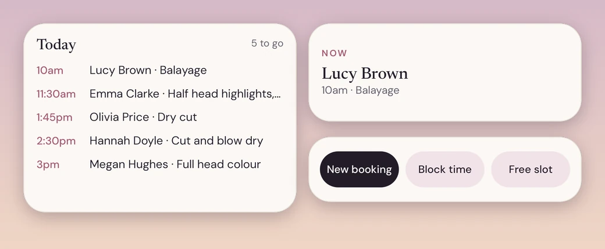
Everything is in, and all of it is free
Salon software usually charges by the month, by the stylist and by the text. Chair has the diary, client records, takings, reports and backups with nothing to pay, because there is no paid version.
- Day, week and list
- See every stylist side by side, the whole week at a glance, or a plain list. Bookings that overlap sit next to each other, never on top of each other.
- Processing time that works for you
- Mark the time a colour or lightener is developing and the diary leaves it free, so a cut can go in while it takes. Add clean-down time after any service.
- Drag to move, stretch to lengthen
- Hold a booking and drag it to another time or stylist, or pull its bottom edge to make it longer. Clashes are flagged before anything is saved.
- Time off, blanked out properly
- Holidays, days off, training, lunch and salon closures, for one stylist or the whole salon. Repeat a block every working day, every week or every fortnight, and skip a single date.
- Bank holidays built in
- UK bank holidays for England and Wales, Scotland or Northern Ireland, worked out by the app, substitute days included. No download, no list to keep up to date.
- Nobody gets forgotten
- Block out time over existing bookings and Chair lists every client it lands on, so you can move or message each one before you go.
- Find the next free slot
- Pick the services and Chair finds the next times they fit, with the stylist the client likes or anyone free.
- Reminders in one tap
- A ready-written text or WhatsApp for each of tomorrow's clients, in your own words. Or let your phone send them as ordinary texts at the time you choose.
- Clients, properly
- Notes, an alert for anything important, every visit, spend, how often they come back, and their no-shows and late cancellations.
- Colour formulas
- Save each formula with its date, and copy last time's into today's in one tap.
- Skin tests
- Record every skin test and its result. Chair warns you when a colour booking is too soon after the test, when a test is out of date, or when there was a reaction. You set the rules.
- Before and after photos
- Taken with your camera or picked from your gallery, then kept encrypted inside Chair, out of your phone's gallery.
- Repeat bookings and rebooking
- Book a run of appointments every three to twelve weeks in one go. After payment, Chair suggests the client's usual next date.
- A waiting list that fills gaps
- Note who wants an earlier slot, and which days and times suit them. When a gap opens, Chair shows who it fits and writes the offer.
- Takings
- Take payment by card, cash or transfer, with tips and products. See any day, week, month or year: totals, how people paid, top services, each stylist, how full the diary was and what no-shows cost.
- A report for your accountant
- A tidy A4 PDF of the takings for any period, and spreadsheets of takings, bookings and clients.
- Home visits
- Add travel time before and after a mobile appointment, so the diary never books you somewhere you cannot be.
- Three widgets
- Today's list, who is in the chair now, and quick buttons for a new booking, time off or the next free slot.
- Your phone's calendar too
- Copy the diary into a calendar on your phone if you like, with clients shown just as Booked if you prefer.
- Bring your clients with you
- Import them from a spreadsheet exported by your old system, or straight from your phone's contacts.
- Data protection made simple
- Give a client a copy of everything you hold about them, forget a client completely, and find clients you have not seen for two, three or six years. A privacy notice is written for you.
- Backup you control
- A backup file locked with your own password, a daily copy to a folder you pick keeping the newest seven, and a simple restore on a new phone.
- Private and locked
- Everything is encrypted on your phone, with a PIN or fingerprint lock. No account, no adverts, and the app cannot go online.
Built around the chair
General booking apps treat an appointment as one block of time. Hairdressing is not like that, and Chair is built for the way a colour, a cut and a busy Saturday really go.
- Colour
Processing time
A root tint is 30 minutes of work, 35 of developing and 15 to finish. Chair books it that way, and the 35 minutes stay free for someone else.
- Colour
Formulas
Last time's formula is one tap from today's booking, with the date it was used.
- Safety
Skin tests
A warning on any colour booking within 48 hours of a test, after a reaction, or once a test is older than you allow.
- Diary
Buffers and travel
Clean-down time after a service, and travel either side of a home visit, both kept out of other bookings.
- Diary
Each stylist's week
Their own working days and hours, with one-off changes for a late night or a short Saturday.
- Clients
Reliability
No-shows and late cancellations counted for you, so you know who to ask for a deposit.
Time off, without the fallout
Blanking out a holiday should not mean finding out later that three clients were booked in. When you block time, Chair lists every booking it lands on, with a ready-written message for each client and a quick way to move them.
Blocks can cover one stylist or the whole salon, a few hours or several weeks, and repeat on a pattern with single dates skipped. Bank holidays fill themselves in for your part of the UK, and you can open the salon on one with a tap.
Blocked time shows in the diary as soft stripes, so nobody books into it by mistake.
Kinds of time off
- HolidayDays or weeks away
- Day offA single day, or every week
- Lunch or breakRepeats every working day if you like
- TrainingCourses and education days
- Salon closedEveryone at once, such as Christmas
- Personal and otherAppointments, school runs, anything else
Takings your accountant will like
At the end of the month or the tax year, make a clean A4 report of everything taken: totals, tips, how people paid, each stylist, the best services and the busiest days, with every payment listed. Spreadsheets of the same figures are one tap away.
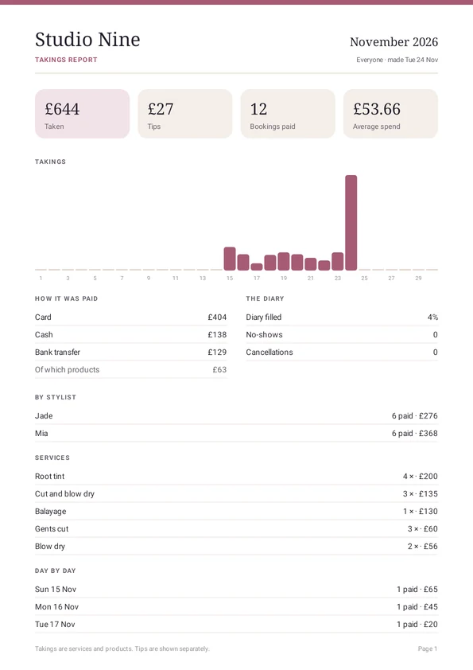
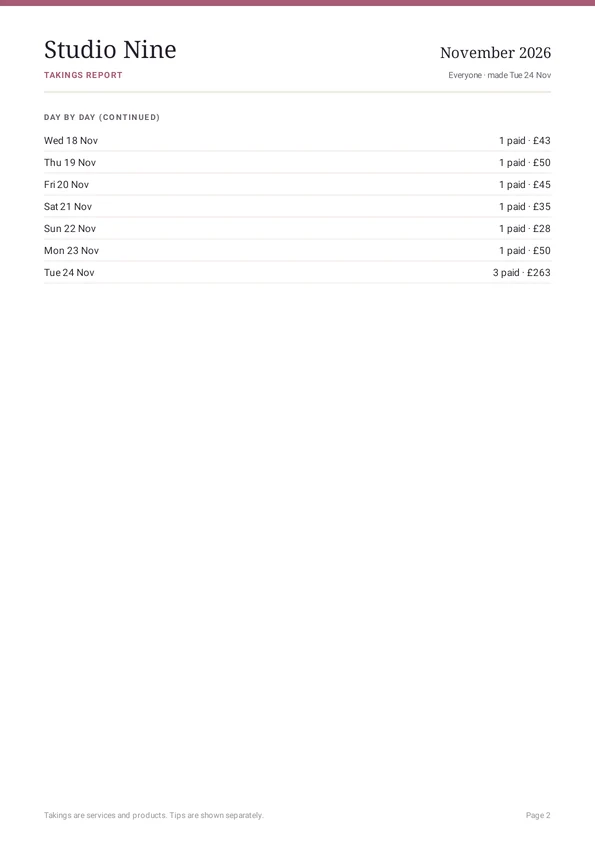
What it asks of your phone
Chair has no access to the internet. Everything it can reach is listed here, with what it does and what it never does. Each one is asked for only when you first use the feature that needs it.
| Access | What Chair does with it | What it never does |
|---|---|---|
| Notifications | Tells you when tomorrow's reminders are ready or have been sent. | Send offers, tips or anything you did not ask for. Client names never show on the lock screen. |
| Sending texts | Sends tomorrow's reminders as ordinary texts, only if you switch automatic texts on. | Send anything else, or read your messages. |
| Contacts | Lets you import clients from your phone's contacts, if you choose to. | Read your contacts at any other time, or keep anyone you did not pick. |
| Calendar | Copies the diary into the one calendar you choose, if you switch it on. | Read or change any other calendar or event. |
| Camera and photos | Opens your camera app, or lets you pick photos, for a client's before and after pictures. | See your gallery. Only the photo you pick or take is passed to Chair. |
| Starting after a restart | Puts the reminder time back after the phone restarts. | Keep running in the background. |
| Fingerprint or face | Unlocks the app, if you turn the app lock on and choose it. | See or store your fingerprint. Android keeps that to itself. |
| A file or folder you pick | Saves or reads a backup, a report or a spreadsheet where you choose. | Look at anything else in your storage. |
| Internet access | None. The app does not ask for it. | Send your diary, clients or anything else off your phone. |
The detail is in the privacy policy.
Your clients stay yours
Nothing is collected
Your diary, clients, formulas, photos and takings are kept on your phone, encrypted. The developer never sees them.
It cannot go online
The app does not hold Android's internet permission, so it has no way to send anything to a server.
No accounts, no adverts
There is nothing to sign up for, no advertising and no analytics, and your client list is never used to market anything.
Free, without the monthly bill
The big salon systems are good, and they charge for it every month. For a salon that keeps its own diary, Chair does the job for nothing.
- No monthly fee
- Fresha's plans in the UK start at £14.95 a month, Booksy at £40 a month, and Timely at about £22 a month for each member of staff. Chair costs nothing.
- No charge per stylist
- Add as many stylists as you like. Nothing goes up as the salon grows.
- No fee on new clients
- Marketplace apps can take a share of a new client's first visit. Chair has no marketplace and takes nothing.
Questions
Is Chair really free?
Yes. There is no paid version, no subscription, no per-stylist charge, no fee on new clients and no adverts. Nothing in the app is locked.
Is it on Google Play?
No. Chair is a personal project and is downloaded from this site as an Android app file. It needs Android 8 or later, which covers almost every phone in use.
Can my clients book online?
No. Chair is the salon's own diary, kept on your phone. Clients book with you by phone, message or in person, as most still do. If you need online booking, the apps on the compare page offer it, for a monthly fee.
Does it need the internet?
No. The app does not ask Android for internet access at all, so it cannot go online. Texts go out through your own phone like any other text, and WhatsApp messages open in WhatsApp for you to send.
Where are my clients' details kept?
Only on your phone, in the app's private storage, encrypted with a key held by Android. Nothing is uploaded, and the developer receives nothing.
Can several stylists use it?
Chair keeps the diary for the whole salon, with each stylist's own hours, time off and colour. It runs on one phone or tablet, so it suits a salon that keeps one diary at the desk, or a stylist working on their own.
Do automatic texts cost anything?
They are sent as ordinary texts from your phone, so they cost whatever your phone contract charges for a text, which is usually nothing extra on a plan with unlimited texts. Chair adds no charge of its own.
What about GDPR?
Client details stay on your phone and are never shared. Chair helps you meet your duties: it can give a client a copy of their record, forget a client completely, find clients you no longer need to keep, and it includes a privacy notice you can show clients. You are still responsible for how your salon uses the details.
How do I move to a new phone?
In Settings, open Backup, set a backup password and save a backup file. Install Chair on the new phone, choose Restore from a backup and enter the same password. Photos come too.
What if I forget my PIN?
There is no way round the PIN, not even for the developer. You can clear the app's storage in your phone's settings, which deletes everything, and then restore your latest backup.
Who made it?
Chair is made by Jonathan Jackson, an independent developer in the United Kingdom. It is not connected with any other salon software company.